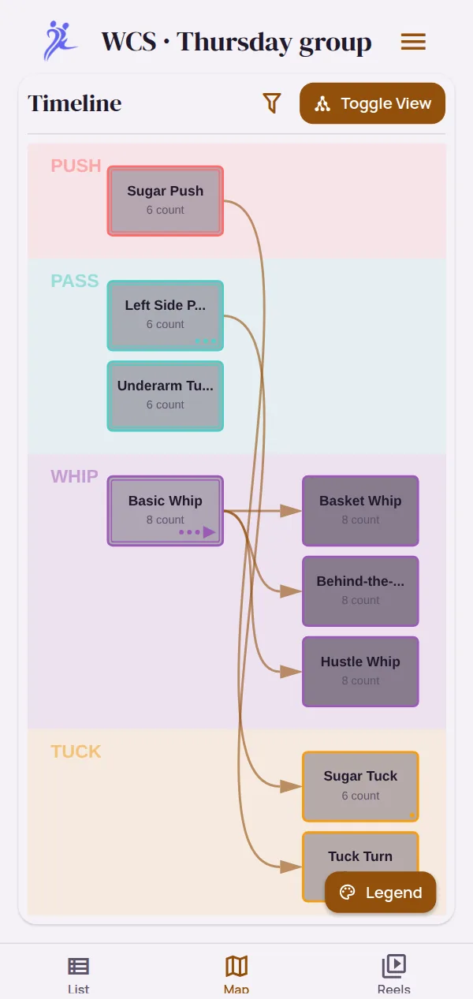
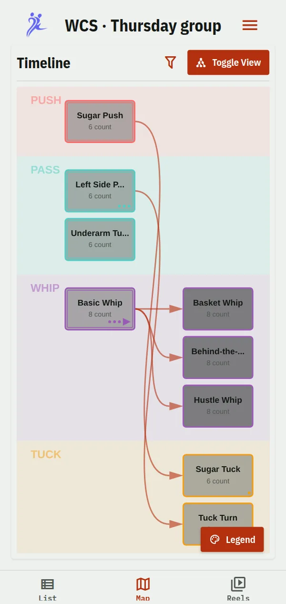
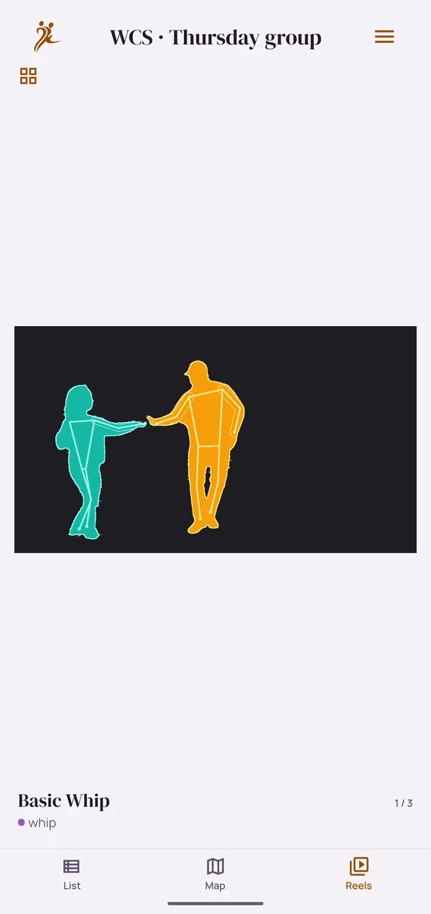
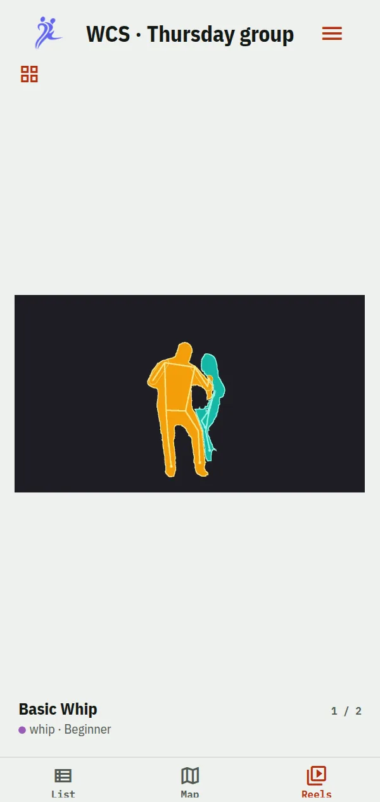
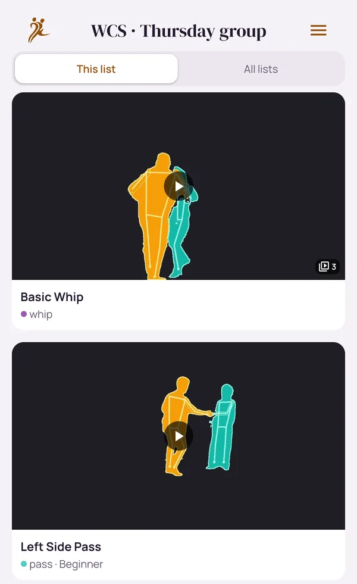
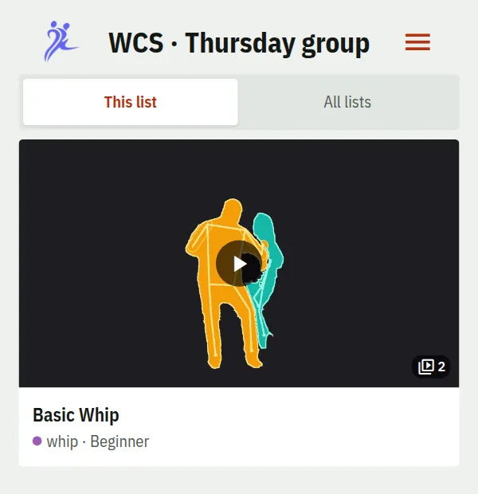
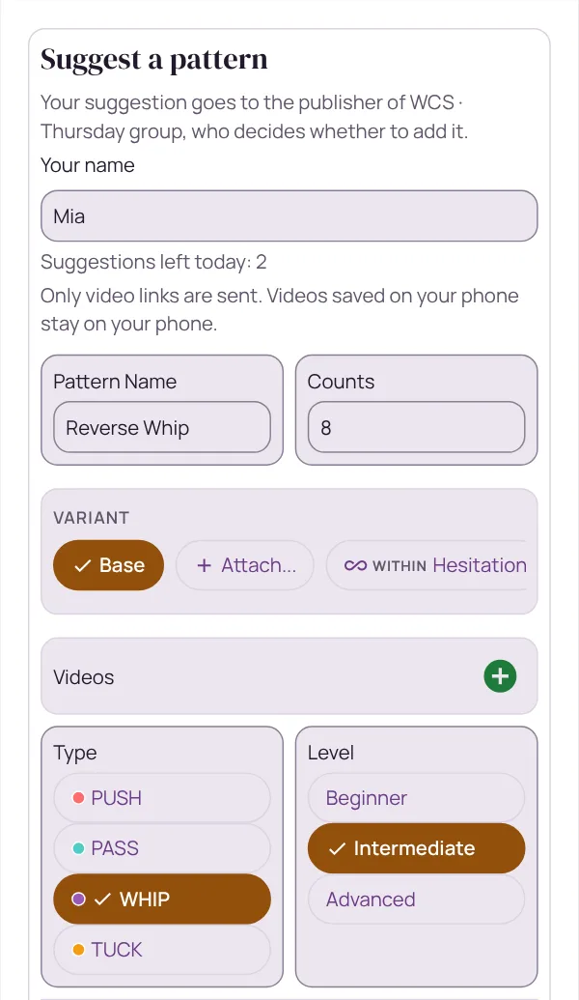
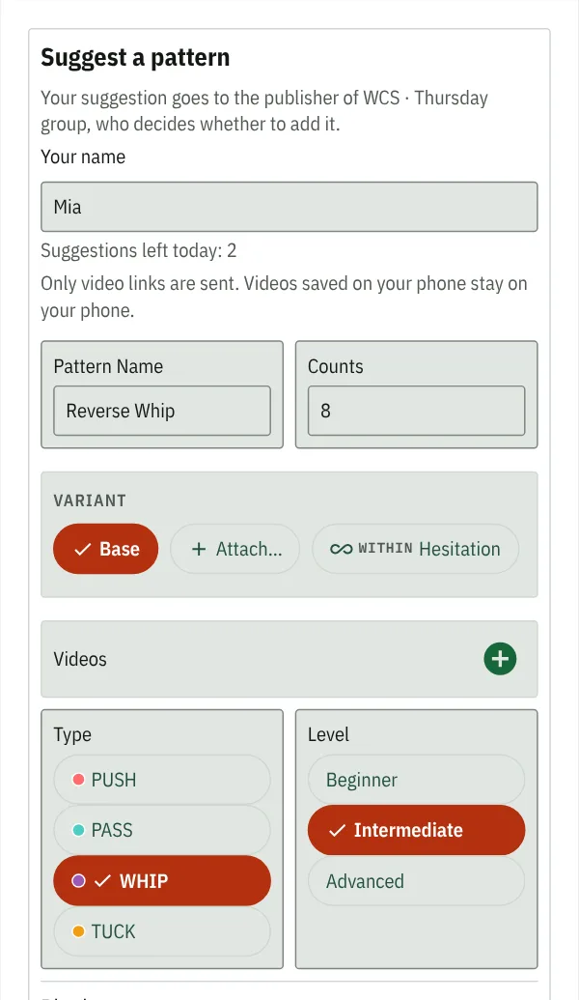
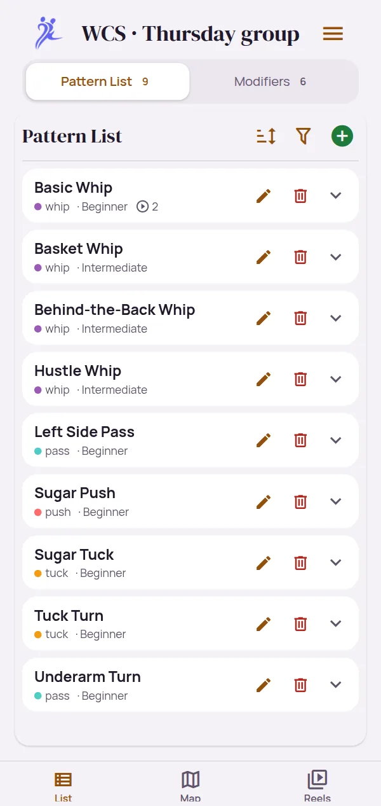
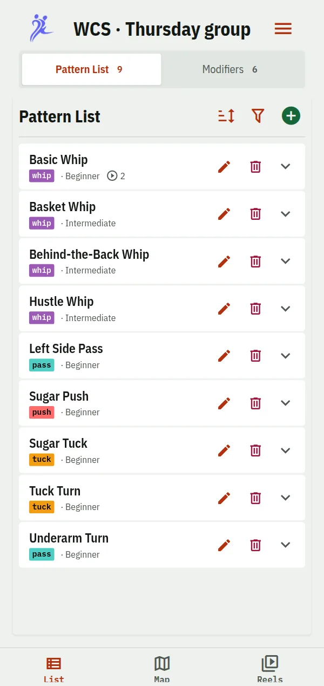

Your course, on your phone.
Your teacher keeps the figures of your course in DPM. Subscribe once, and every figure they add shows up on your phone, with its counts, notes and videos.


How to subscribe
-
Install DPM
On Android for now, with iPhone to follow. You don't need an account.
-
Get the code
Your teacher shows it in class: eight characters, or a QR code.
-
Subscribe
On the Lists screen, tap Subscribe, then type the code or scan the QR code. The list appears among your lists.
If it's for members only, ask to join and give your name, so your teacher knows it's you. Once they've let you in, look the code up again.
What to expect
A live copy of your teacher's list. It updates by itself, so the figure from tonight's class is there by the time you get home, if your teacher has added it.
- List: look a figure up, with its counts, rhythm, notes and variations
- Map: see what each figure builds on, and filter for your course's tag
- Reels: watch the videos one after another before class or a social
The list is read-only for you: your teacher keeps it. The videos are links your teacher added, and play inside DPM.




Suggest a figure
If your teacher allows it, you can suggest a pattern for the list: its name, type and counts, a description and a video link, signed with your name if you like. It goes to your teacher, who decides whether to add it.
- There's a daily limit, and the form shows how many you have left
- Only video links are sent; videos saved on your phone stay there
Filmed the figure in class? Put it online from DPM, then suggest it with the link.


Your own notes and videos
Keep a list of your own next to your teacher's, for the clips you filmed and the things you want to remember. Reels can play every list on your phone together.
Keeping track of your own progress has the rest: tags, variations, and video tools that shorten, anonymize and transcribe on the phone.


Questions
What if my teacher stops sharing the list?
You keep your copy, and it becomes yours to edit. It just doesn't get updates any more.
What if the list becomes members only?
Your copy is kept and becomes editable. To get updates again, look the code up, ask to join, and look it up once more after your teacher has let you in.
Does my teacher see who I am?
Only the name you type when you ask to join or suggest a pattern, and you can leave it empty. The app gets an anonymous ID for that, never an account or your contact details. Just following an open list needs no ID at all.
Can I share the list with a friend?
Your teacher decides. On an open list, anyone with the code can subscribe; on a members-only list, your friend asks to join like you did.
Read on
Keep track of your own progress
Every figure from your courses and festivals, with your videos and how they connect.
Read more → With classmatesOne list for your class
Classmates or friends follow one list that one of you keeps, and take turns filming.
Read more → As a teacherYour course material, under your control
Decide who gets in, what your students may add and who can watch your videos.
Read more →